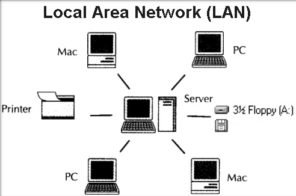
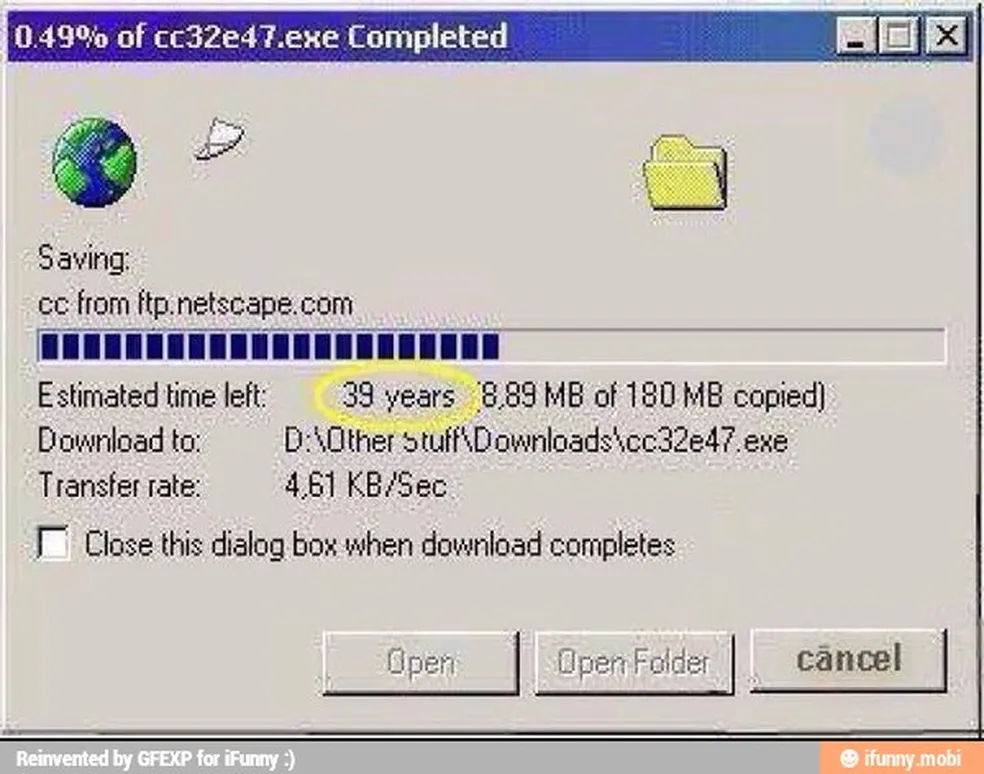

A seguinte Wiki irá tratar de um dos assuntos mais presentes no nosso dia a dia, a constante evolução das tecnologias de redes e computadores. Como parte inicial da wiki, será organizada em eras cronológicas, refletindo marcos importantes no desenvolvimento das redes.
A Era da Pré-Rede é um período fascinante que costuma passar batido, mas foi essencial para o surgimento das redes de computadores como conhecemos hoje. Esse período marca os primeiros computadores, usados principalmente em aplicações militares, científicas e acadêmicas.
Como mencionado, nos anos de 1940 a 1950, foram desenvolvidos os primeiros exemplares de computadores, que se caracterizavam pelo seu grande tamanho, alta faixa de preço e isolados, ocupavam salas inteiras e não havia ainda a ideia de conectá-los para troca de dados. A imagem abaixo é mostrado um exemplar de computador da referida época.

Aqui, ainda não havia padrões de comunicação entre máquinas, cada computador era uma "ilha", com seu próprio sistema operacional e linguagem. Se era necessário transferir dados de uma máquina para outra, o processo era físico, como:
Apesar de não haver redes ainda nesse período, ainda foi fundamental para o surgimento das redes, pois:
Durante a Guerra Fria, em meio à crescente necessidade de sistemas de comunicação resilientes e descentralizados, especialmente nos EUA, a popularização dos computadores em universidades e centros de pesquisa impulsionava a demanda por formas eficientes de compartilhamento remoto de recursos e informações.
- Um computador em Massachusetts foi conectado a outro na Califórnia via linha telefônica
- A ARPA, do Departamento de Defesa dos EUA, financiou projetos para conectar universidades e centros de pesquisa.
- Foi a primeira rede operacional de comutação de pacotes, considerada o "Berço da Internet". Contendo 4 nós:
- Enviada de UCLA para Stanford, a mensagem seria "LOGIN", mas só os caracteres “L” e “O” chegaram antes do sistema travar, e assim, nasceu o embrião da Internet.
O desenvolvimento de tecnologias como a comutação de pacotes, o NCP e os IMPs foi crucial para viabilizar a comunicação entre computadores em redes geograficamente distribuídas, estabelecendo as bases da Internet moderna e inspirando iniciativas similares em outros países, como o CYCLADES na França e o NPL no Reino Unido.
Com a popularização dos minicomputadores e, posteriormente, dos microcomputadores, surgiu a necessidade de compartilhar recursos localmente (como impressoras, arquivos e conexões com mainframes) impulsionando empresas, universidades e escritórios a buscarem a automação de seus ambientes internos.
LAN é o conceito de conectar computadores em uma área geográfia limitada, como uma sala, prédio ou campus. Permitindo alta velocidade de transmissão e gerenciamento centralizado dos recursos.
A partir da década de 1970, com o surgimento do Ethernet no Xerox PARC (que se tornaria o padrão dominante para redes locais) e de alternativas como Token Ring, AppleTalk e ARCnet, empresas e instituições passaram a conectar computadores em rede para compartilhar periféricos como impressoras e servidores, enquanto o protocolo TCP/IP, ainda restrito a ambientes acadêmicos e governamentais, começava a ganhar espaço, consolidando o modelo cliente-servidor e estabelecendo as bases das redes corporativas, domésticas e da futura Internet comercial.
As redes locais já estavam em funcionamento e a ARPANET havia provado que era possível interligar computadores remotamente. Agora, o objetivo era conectar redes inteiras entre si, formando uma rede de redes, nasce a Internet.

Em 1983, com a adoção oficial do TCP/IP pela ARPANET, redes acadêmicas e de pesquisa começaram a se interconectar, formando a base da infraestrutura global da Internet, enquanto tecnologias como o DNS, e serviços como e-mail, FTP, Telnet e IRC se popularizavam, marcando a transição da Internet de um experimento militar para uma poderosa ferramenta de comunicação acadêmica e, posteriormente, comercial.
A Internet já existia, mas era limitada a especialistas e comandos de terminal. Em 1991, Tim Berners-Lee inventa a World Wide Web, revolucionando o acesso à informação.
A partir de 1991, com o lançamento da Web e tecnologias como HTML, HTTP e os primeiros navegadores (culminando no Mosaic em 1993) a Internet tornou-se acessível ao público em geral, impulsionando uma explosão de websites, e-mails, fóruns, e-commerce e a entrada de grandes empresas, enquanto navegadores como Netscape e Internet Explorer, além de recursos como cookies e JavaScript, consolidaram a era da Internet comercial e deram início ao boom tecnológico que culminaria na bolha do final dos anos 90.
A Web já era popular, mas as conexões discadas limitavam a experiência. O avanço da banda larga e das redes móveis (2G e 3G) trouxe uma Internet mais rápida e sempre acessível.
Com a popularização de tecnologias como ADSL, cabo, fibra óptica, Wi-Fi e redes móveis como o 3G, além do surgimento de smartphones conectados à web (como o iPhone em 2007) a Internet se integrou ao cotidiano das pessoas, impulsionada por serviços como redes sociais, YouTube, MSN e Skype, marcando um aumento massivo no tráfego de dados e o início da convergência digital entre vídeo, voz e texto em um único meio.
Com a banda larga e os dispositivos móveis consolidados, o foco passou a ser armazenar, processar e distribuir dados em grande escala. A nuvem permite acesso remoto a dados e serviços, enquanto as redes sociais redefinem a comunicação online.
Com o avanço da computação em nuvem, o uso de plataformas como AWS, Google Cloud e Azure, e o surgimento de tecnologias como Big Data, APIs, automação, SDN, virtualização e containers, dados e aplicações passaram a ser independentes do dispositivo físico, fortalecendo o modelo SaaS e consolidando a Internet como o eixo central das relações sociais, comerciais e profissionais na era digital.
A conectividade está presente em tudo: casas, carros, relógios, sensores industriais. A Internet das Coisas (IoT) e o 5G permitem comunicação em tempo real entre bilhões de dispositivos. A inteligência artificial impulsiona redes mais autônomas, seguras e eficientes.
Com a chegada do 5G, a proliferação da Internet das Coisas (IoT), o avanço do Edge Computing e o uso crescente de inteligência artificial e machine learning, as redes passaram a operar de forma mais autônoma, preditiva e integradas ao mundo físico, possibilitando o crescimento de cidades inteligentes, carros autônomos e fábricas conectadas, ao mesmo tempo em que a cibersegurança se torna essencial diante da crescente interconectividade.